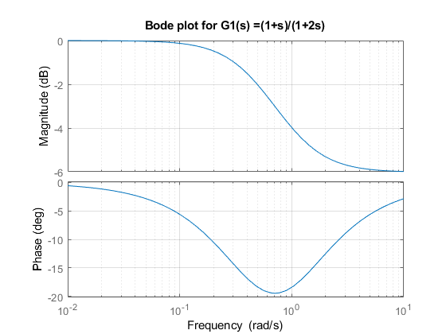
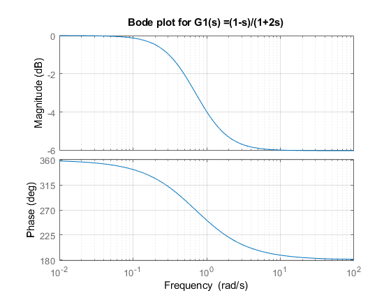
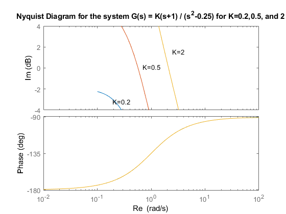

Contents
B-8-3-a
num = [1 1];
den = [2 1];
bode(num, den);
grid;
title('Bode plot for G1(s) =(1+s)/(1+2s)');

B-8-3-b
num = [-1 1];
den = [2 1];
bode(num, den)
grid
title('Bode plot for G1(s) =(1-s)/(1+2s)');

B-8-23- Bode Diagram
num1 = [0 0.2 0.2];
num2 = [0 0.5 0.5];
num3 = [0 2 2];
den = [1 0 -0.25];
axis_l = logspace(-1,2,100);
bode(num1, den, axis_l);
hold on
bode(num2, den)
bode(num3, den)
grid on
title(['Bode Diagram for the system G(s) = K(s+1) / (s^2-0.25) for K=0.2' ...
',0.5, and 2']);
gtext('K=0.2');
gtext('K=0.5');
gtext('K=2');

B-8-23- Nyquist Diagram
num1 = [0 0.2 0.2];
num2 = [0 0.5 0.5];
num3 = [0 2 2];
den = [1 0 -0.25];
w = 0.01: 0.01: 20;
[re1, im1, w] = nyquist(num1,den,w);
[re2, im2, w] = nyquist(num2,den,w);
[re3, im3, w] = nyquist(num3,den,w);
plot(re1,im1,re2,im2,re3,im3)
ax = [-10 1 -4 4]; axis(ax)
grid
gtext("K=0.2");
gtext("K=0.5");
gtext("K=2");
title(['Nyquist Diagram for the system G(s) = K(s+1) / (s^2-0.25) for K=0.2' ...
',0.5, and 2']);
xlabel("Re");
ylabel("Im");

B-8-23 Root locus Plot
num = [0 1 1];
den = [1 0 -0.25];
rlocus(num, den);
grid
title("Root locus plot of G(s) = K(s+1)/s^2-0.25");
[K1,r1] = rlocfind(num, den);
[K2,r2] = rlocfind(num, den);
[K,r] = rlocfind(num, den);
Error using DynamicSystem/rlocus
Plots must be of the same type and size to be superimposed.
Error in rlocus (line 126)
rlocus(sys,k)
Error in HW5 (line 56)
rlocus(num, den);
B-8_28
num = [0 0 0 20 20];
den = conv([1 2 10 0],[1 5]);
axis_l = logspace(-1, 2, 100);
sys=tf(num,den);
bode(num, den, axis_l);
grid
[Gm, pm] = margin(sys);
Gmdb = 20*log10(Gm);
[Gmdb, pm]